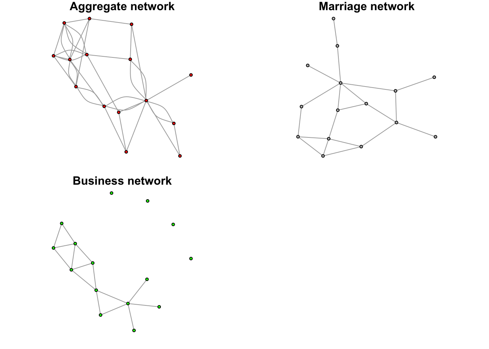

library(devtools)
install_github("https://github.com/Tom-Wolff/ideanet")
library(ideanet)
library(dplyr)R Vignette
The goal of the IDEANet program is to lower the barrier of entry to network analysis for scholars interested in relational measurement. Some researchers may have data and questions that are suitable to network analysis. And yet, getting comfortable with the tools available in R can prove to be an arduous and time consuming task.
IDEANet is a set of functions which leverages existing network analysis packages in R (igraph, network, sna) to provide high quality measurements seamlessly from the starting data. The team behind IDEANet in collaboration with the Duke University Library Services have also created a repository of publicly available network datasets which researchers can pull from or host their own data. If you are interested in hosting your own data, feel free to fill out the form available on our Database page.
IDEANet is supported by the National Science Foundation as part of the Human Networks and Data Science - Infrastructure program (BCS-2024271 and BCS-2140024).
Getting Set Up
Lets begin by importing IDEANet. IDEANet is currently available only as a Github package and requires a direct download using devtools.
In this vignette, we will be using the datasets included with the package. IDEANet comes with a variety of datasets we can explore using the data() function
data(package = "ideanet")In this vignette, we will use the Fauxmesa dataset. The data represents a simulation of friendships among students in a school. The data are directed, unweighted and contain a single layer of friendships. We also know some things about these students – what grade they are in (“grade”), what race they identify with (“race”) and what sex they identify with (“sex”).
data(fauxmesa)
head(fauxmesa_edges) from to
1 1 25
2 1 52
3 1 58
4 1 70
5 1 87
6 1 92head(fauxmesa_nodes) id grade race sex
1 1 7 Hisp F
2 2 7 Hisp F
3 3 11 NatAm M
4 4 8 Hisp M
5 5 10 White F
6 6 10 Hisp FThis data is amenable to network analysis. But the implementation of network analysis in R is far from straightforward: the available tools in R are shared between several packages, each with their own strengths and weaknesses. This breadth of options can make it difficult to produce reliable results by making the correct function for a given measurement difficult to identify and, at worst, packages conflicting with each other and relying on different assumptions about the data. For many researchers, this can prove to be an effective deterrent when engaging in network analysis.
IDEANet allows the researcher to directly input their data and retrieve high-quality measurement in a format that facilitates subsequent analysis.
Reading in Files: Netread()
Alternatively, the user can import their own data. IDEANet provides a useful module that ingests a variety of data formats and converts them to a shape expected by further IDEANet modules…
Core Analysis: Netwrite()
Running netwrite()
The central analysis component of IDEANet is accessed via the netwrite() function. netwrite() comes with a breadth of arguments described in the netwrite() documentation. The documentation can be accessed with the following code, or by via our webpage (link).
?netwrite()Returning to our high-school example, we can ask IDEANet to return basic network measurements on the network by including some basic arguments: what kind of network object we are using – in this case, an edgelist – and some information about sources, targets and their directionality.
netwrite(data_type = "edgelist",
i_elements = fauxmesa_edges$from,
j_elements = fauxmesa_edges$to,
directed = T)(Bonacich power centrality) Adjacency matrix for network is singular. Network will be treated as undirected in order to calculate measures
(Bonacich power centrality) Adjacency matrix for network is singular. Network will be treated as undirected in order to calculate measures(Eigenvector centrality) Adjacency matrix for network is singular. Network will be treated as undirected in order to calculate measures(Eigenvector centrality) Network consists of 2+ unconnected components. Eigenvector centrality scores will be calculated for nodes based on their position within their respective components.netwrite() includes a series of warnings that warns you about the way certain measurements are calculated. In this case, while most metrics are calculated as directed (as we requested in the function), some functions such as power centrality and eigenvector centrality require interpreting the network as undirected.
While this successfully returned the metric we will be exploring further in this vignette, netwrite() has additional quality of life arguments that we can use with our example. For example, we want to include node level attributes and change the name of our output network.
However, notice that there are students in our nodelist that don’t exist in our edgelist.
setdiff(fauxmesa_nodes$id, fauxmesa_edges$from) %>% head()[1] 3 4 6 7 10 12In this case, netwrite() will consider additional student’s as isolates in the network.
rm(list=ls()) # get a clean slate
data(fauxmesa) # bring in our data again
netwrite(data_type = "edgelist",
i_elements = fauxmesa_edges$from,
j_elements = fauxmesa_edges$to,
directed = T,
nodelist = fauxmesa_nodes,
node_id = "id",
net_name = "fauxmesa_network")(Bonacich power centrality) Isolates detected in network. Isolates will be removed from network when calculating power centrality measure, and will be assigned NA values in final output.(Bonacich power centrality) Adjacency matrix for network is singular. Network will be treated as undirected in order to calculate measures(Bonacich power centrality) Isolates detected in network. Isolates will be removed from network when calculating power centrality measure, and will be assigned NA values in final output.(Bonacich power centrality) Adjacency matrix for network is singular. Network will be treated as undirected in order to calculate measures(Eigenvector centrality) Isolates detected in network. Isolates will be removed from network when calculating eigenvector centrality measure, and will be assigned NA values in final output.(Eigenvector centrality) Adjacency matrix for network is singular. Network will be treated as undirected in order to calculate measures(Eigenvector centrality) Network consists of 2+ unconnected components. Eigenvector centrality scores will be calculated for nodes based on their position within their respective components.netwrite() interpretation
netwrite() offers a variety of outputs that facilitate a clear interpretation of the network structure. Starting from the top, the output contains system level measures that tell the researcher about the network’s overall characteristics.
system_measure_plot
These measurements are also available in traditional table form.
system_level_measures %>% rmarkdown::paged_table()netwrite() also outputs a graph object that contains each node and edge-level measurement computed within the function. This graph object allows for traditional network manipulation, such as plotting.
plot(fauxmesa_network, vertex.label = NA, vertex.size = 3, edge.arrow.size = 0.2)
Note that the output network can contain both isolates and self-loops. Isolates were included when we defined a list of node ids (including isolate) in the “nodelist” argument of netwrite(). There is currently no method for removing self-loops within netwrite() - instead, the user is expected to remove any unwanted edges before reading them into netwrite().
In addition to the full network, researchers may be interested in the shape of major sub-components. netwrite() outputs two additional graph objects: the largest component in the network.
plot(largest_component, vertex.label = NA, vertex.size = 3, edge.arrow.size = 0.2,
main = "largest component")
And the largest bi-component of the network.
plot(largest_bi_component, vertex.label = NA, vertex.size = 3, edge.arrow.size = 0.2,
main = "largest bi-component")
netwrite() also outputs an edgelist dataframe of the same length as the input edges. This edgelist object contains unique dyad-level ids, internal ego and alter ids, the original id values and weights (uniformly set to 1 if no weights are defined).
head(edgelist) %>% rmarkdown::paged_table()Lastly, netwrite() returns measurement at the node level as a dataframe of values and a plot of distributions. Certain measurements are computed only under certain weight and edge direction conditions - that is, the nodelist only contains measurements appropriate to the network features.
head(node_measures) %>% rmarkdown::paged_table()node_measure_plot
Multilayered networks
IDEANet can also handle multilayered networks. For example, we may be interested in both marriage and business between elite Florentine families that gave rise to the prominence of the house of Medici. This data is available in the IDEANet package and contains a layer column that indicates if the relationships are marriage ties or business ties.
rm(list=ls()) # get a clean slate
data(florentine) # bring in our florentine families data
florentine <- florentine %>%
mutate(layer = case_when(layer == 1 ~ "marriage", T ~ "business"))
head(florentine, 10) node target weight layer
1 0 8 1 marriage
2 1 5 1 marriage
3 1 6 1 marriage
4 1 8 1 marriage
5 2 4 1 marriage
6 2 8 1 marriage
7 2 4 1 business
8 2 5 1 business
9 2 8 1 business
10 2 10 1 businessTaking advantage of these layers in netwrite() is easy: just indicate which column contains your layer information using the type argument.
netwrite(data_type = "edgelist",
i_elements = florentine$node,
j_elements = florentine$target,
directed = F,
type = florentine$layer, # indicate layer variable
net_name = "florentine_network")Processing network for edge type marriageProcessing network for edge type business(Bonacich power centrality) Isolates detected in network. Isolates will be removed from network when calculating power centrality measure, and will be assigned NA values in final output.
(Bonacich power centrality) Isolates detected in network. Isolates will be removed from network when calculating power centrality measure, and will be assigned NA values in final output.(Eigenvector centrality) Isolates detected in network. Isolates will be removed from network when calculating eigenvector centrality measure, and will be assigned NA values in final output.Processing aggregate network of all edge typesJoining with `by = join_by(id, attr)`
Joining with `by = join_by(id, attr)`Running netwrite() on multi-layered network will yield some additional warnings that netwrite() is being computed on each layer separately, and on a network containing aggregated layers.
When given a multi-layered network to work with, netwrite() will return the outputs described previously in slightly different ways. First, we can see that the edgelist object contains every type of tie, and comes paired with a list object edgelists_list that separates each type of connection into their own edgelist.
head(edgelist) %>% rmarkdown::paged_table()summary(edgelist_list) Length Class Mode
summary_graph 7 data.frame list
marriage 6 data.frame list
business 6 data.frame listThe same is true of the node_measures object and its associated list object node_measures_list. For node measurements, variables with no tie-type prefix are calculated using every type of tie, while measurements calculated on a specific sub-network have the associated tie-type prefix. For example, in this example we see 3 different values for total degree, one for marriage ties, one for business ties and a value without prefix that represents the metric for the aggregate network.
node_measures %>%
dplyr::select(id, total_degree, marriage_total_degree, business_total_degree) %>%
rmarkdown::paged_table()Every other expected output are constructed as list objects and have the “_list” suffix. Lists can be accessed to access metric at different layers of the network, or the network with aggregated layers. For example, we can access the “network_list” object and extract the three layer-associated graphs.
summary(network_list) # Check in which position each sub-network is Length Class Mode
summary_graph 15 igraph list
marriage 15 igraph list
business 15 igraph listpar(mfrow = c(2, 2), mar = c(1, 1, 1, 1))
set.seed(123)
plot(network_list$summary_graph, vertex.label = NA, vertex.size = 4, edge.arrow.size = 0.2,
vertex.color = "red", main = "Aggregate network")
plot(network_list$marriage, vertex.label = NA, vertex.size = 4, edge.arrow.size = 0.2,
vertex.color = "gray", main = "Marriage network")
plot(network_list$business, vertex.label = NA, vertex.size = 4, edge.arrow.size = 0.2,
vertex.color = "green", main = "Business network")
Analysis Modules
IDEANet also includes an analysis component. Individual analysis modules allow the researcher to take the output of the core netwrite() function and apply network-centric models, considerably expanding possibilities for interpretation. Currently, the Multiple Regression Quadratic Assignment Procedure (MRQAP) and Role-Analysis modules are available. We expect to expand the number of models as development on IDEANet move forward.
MRQAP
MRQAP is an extension of the Mantel test which uses node-permutation in order to get around issues of non-independence that make a traditional regression analysis difficult when using network data. This module can be useful if the researcher has a question about the probability of a tie existing or the likelihood that tie will have a specific dyadic feature.
For example, we may be interested in the following question about adolescent friendships in high-school: Is being of the same self-identified sex (e.g., sex homophily) increase the likelihood of a relationship? Are white students more likely to be friends with other white students (e.g., race homophily)?
First, let’s reset our environment and return to the high-school data introduced earlier in the vignette:
rm(list=ls()) # get a clean slate
data(fauxmesa)
netwrite(data_type = "edgelist",
i_elements = fauxmesa_edges$from,
j_elements = fauxmesa_edges$to,
directed = T,
nodelist = fauxmesa_nodes,
node_id = "id",
net_name = "fauxmesa_network")(Bonacich power centrality) Isolates detected in network. Isolates will be removed from network when calculating power centrality measure, and will be assigned NA values in final output.(Bonacich power centrality) Adjacency matrix for network is singular. Network will be treated as undirected in order to calculate measures(Bonacich power centrality) Isolates detected in network. Isolates will be removed from network when calculating power centrality measure, and will be assigned NA values in final output.(Bonacich power centrality) Adjacency matrix for network is singular. Network will be treated as undirected in order to calculate measures(Eigenvector centrality) Isolates detected in network. Isolates will be removed from network when calculating eigenvector centrality measure, and will be assigned NA values in final output.(Eigenvector centrality) Adjacency matrix for network is singular. Network will be treated as undirected in order to calculate measures(Eigenvector centrality) Network consists of 2+ unconnected components. Eigenvector centrality scores will be calculated for nodes based on their position within their respective components.igraph::V(fauxmesa_network)$raceNULLWe have information about student’s race and sex; however, MRQAP expects all information to be dyadic - in other words, we need to move from individual level information to comparisons between student’s in the relationships. For example, we may want to know if the sex of two students in a relationships is the same or not. For our second question, we only want to know if both students are white, not if they share the same race in general.
To make this reformatting step more accessible, IDEANet offer the qap_setup() function. This function can work independently of netwrite() output, although we recommend its output as the input for all analysis modules.
qap_setup(net = fauxmesa_network,
variables = c("race", "sex"),
methods = c("multi_category", "reduced_category"),
directed = T)qap_setup() provides three possible methods for transforming data:
“multi_category”: Applies to categorical variables only. It creates as many variables as there are unique values; each variable signals if both ego and alter have the given value.
“reduced_category”: Applies to categorical variables only. Creates a single variable that signals if alter and ego have the same value.
“both”: Applies to categorical variables only. Computes both the “multi_category” and “reduced_category” methods.
“difference”: Applies to numeric variables only. Computes the difference in input value between ego and alter.
qap_setup() produces a list object qap_results that contains:
An igraph object that includes the newly computed edge variables
A nodelist
An edgelist that includes the newly computed edge variables.
summary(qap_results) Length Class Mode
[1,] 205 igraph list
[2,] 28 data.frame list
[3,] 3 data.frame listqap_results[[3]] %>% select(from, to, ) from to
1 0 24
2 0 51
3 0 57
4 0 69
5 0 86
6 0 91
7 0 95
8 0 99
9 0 109
10 0 126
11 0 150
12 0 160
13 0 173
14 1 51
15 1 99
16 1 133
17 1 189
18 4 203
19 7 29
20 7 103
21 7 159
22 8 18
23 8 53
24 8 114
25 8 204
26 10 43
27 10 73
28 12 60
29 12 152
30 13 181
31 14 21
32 14 54
33 14 75
34 14 188
35 15 39
36 15 139
37 16 121
38 17 62
39 17 128
40 17 157
41 17 194
42 20 58
43 20 101
44 20 139
45 21 54
46 21 63
47 21 75
48 21 122
49 21 188
50 22 35
51 24 42
52 24 59
53 24 76
54 24 86
55 24 91
56 24 146
57 26 67
58 26 92
59 28 50
60 28 54
61 29 53
62 29 103
63 29 159
64 30 113
65 30 184
66 31 177
67 32 139
68 33 186
69 33 199
70 35 96
71 35 166
72 37 154
73 42 59
74 42 76
75 43 73
76 43 135
77 46 73
78 46 78
79 46 101
80 46 104
81 46 138
82 46 152
83 46 188
84 46 190
85 46 200
86 50 54
87 50 60
88 51 126
89 51 189
90 52 82
91 52 135
92 53 114
93 54 60
94 54 65
95 54 85
96 54 122
97 54 156
98 55 70
99 55 128
100 56 132
101 57 148
102 58 64
103 58 103
104 62 197
105 63 65
106 63 122
107 63 138
108 63 156
109 64 103
110 65 81
111 65 156
112 69 157
113 69 194
114 73 135
115 73 175
116 74 186
117 74 203
118 77 136
119 78 98
120 78 107
121 78 163
122 78 172
123 80 130
124 82 135
125 86 87
126 86 91
127 86 95
128 86 109
129 86 126
130 86 155
131 86 178
132 86 182
133 87 182
134 88 110
135 88 130
136 89 116
137 90 186
138 91 109
139 95 99
140 95 109
141 95 136
142 95 149
143 95 178
144 97 191
145 98 163
146 98 172
147 99 136
148 99 149
149 100 107
150 101 188
151 101 200
152 102 127
153 102 140
154 103 159
155 104 138
156 107 172
157 108 120
158 108 141
159 109 133
160 111 184
161 113 137
162 113 184
163 114 143
164 122 138
165 122 156
166 122 177
167 122 188
168 123 141
169 123 159
170 123 160
171 124 203
172 126 149
173 126 150
174 128 157
175 131 149
176 131 184
177 133 195
178 135 201
179 136 178
180 137 179
181 137 184
182 138 188
183 138 192
184 139 159
185 139 193
186 141 159
187 145 191
188 147 193
189 148 164
190 148 185
191 152 169
192 157 194
193 159 165
194 159 193
195 160 189
196 163 172
197 164 177
198 164 186
199 164 198
200 178 195
201 180 181
202 182 189
203 188 190qap_setup() function returns four new variables. Variables appended with “_ego” and “_alter” represent the original values pulled from the nodelist. An additional variable is created for each of the two unique values that “house_gender” can take on: “both_house_gender_2” tells us if both ego and alter are households that are led by female respondents.
With our variables of interest in hand, we can turn to the MRQAP analysis itself. The IDEANet MRQAP module provides the a qap_run() function which integrates seamlessly with the output from netwrite() and qap_setup(). Arguments for qap_run() toggles for the number of permutations and the family of the model (currently, linear and binomial). See function description for more information. If the dependent argument is left NULL, the function defaults to predicting the probability of tie.
NOTE: Binomial MRQAP is very sensitive to model specification; for exploratory purposes, it is recommended to stick to a linear functional form. We significantly decrease the number of permutations to allow for lower computation times, though this may make our confidence intervals less interpretable.
# qap_run(net = qap_results[[1]],
# variables = c("sex", "race"),
# dependent = NULL,
# directed = T,
# reps = 500,
# family = "linear")
#
# model_results[[1]]The MRAQP analysis outputs a list of two objects. The first contains a summary of model results akin to a traditional regression output. In this analysis, it is clear that shared household religion plays a major factor in the production of a socialization network, net of the difference in household degree and whether both households are female-led.
The second network object provides the number of dyadic observations on which the model is computed.
Role Analysis
@Tom Wolff